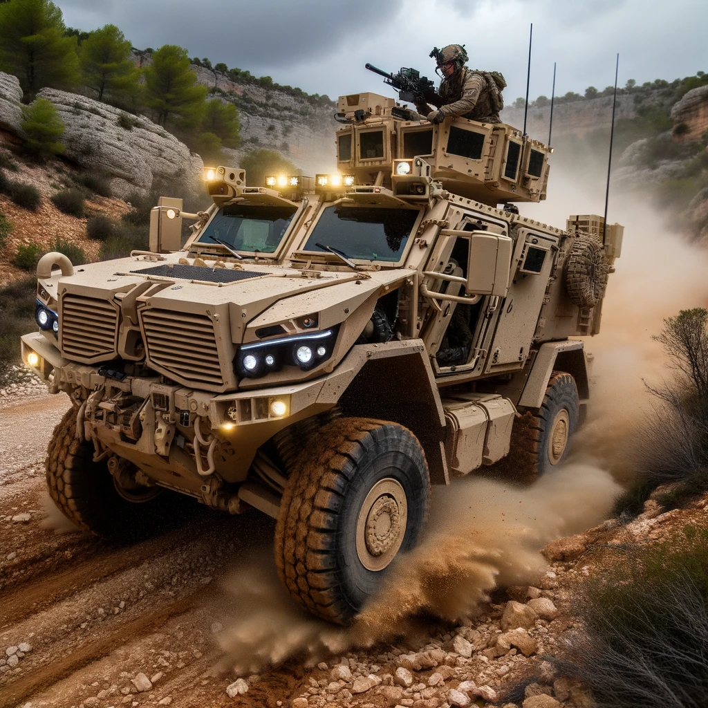

Vehicle d'Alta Mobilitat Tàctic
És un vehicle tot terreny militar desenvolupat i fabricat per
l'empresa espanyola UROVESA. És similar en aparença i disseny al
Humvee estatunidenc, encara que hi ha diferències significatives en
termes d'especificacions i capacitats. Característiques principals del
VAMTAC: Versatilitat: El VAMTAC ha estat dissenyat per ser modular, la
qual cosa significa que pot adaptar-se a diferents rols, incloent
transport de tropes, ambulància, vehicle de comandament i control, i
plataforma d'armes. Mobilitat: Amb tracció a les quatre rodes i una
suspensió robusta, el VAMTAC pot maniobrar en diversos terrenys, des
de deserts fins a zones muntanyenques. Protecció: Depenent de la
configuració, el VAMTAC pot oferir protecció balística i contra mines.
També té capacitats de protecció NBC (nuclear, biològica i química).
Motorització: Està equipat amb un motor dièsel que li proporciona una
velocitat màxima d'aproximadament 130 km/h i una autonomia
d'aproximadament 600 km. Capacitat de càrrega: Pot transportar una
càrrega útil d'aproximadament 2.500 kg, depenent de la configuració.
Configuracions: Hi ha múltiples variants del VAMTAC, incloent versions
equipades amb míssils, metralladores, sistemes de comunicació
avançats, i més. El VAMTAC ha estat adoptat per les Forces Armades
Espanyoles i ha estat exportat a diversos altres països. A més, ha
participat en missions internacionals, demostrant la seva fiabilitat i
versatilitat en diferents escenaris i condicions. Es considera un dels
vehicles militars més eficients i versàtils en la seva categoria.